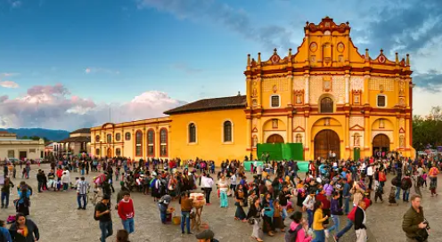

San Cristóbal de las Casas
Chiapas
San Cristóbal de las Casas es una ciudad llena de historia y cultura, con una gran influencia indígena. Sus calles empedradas, casas coloniales de colores vivos y mercados de artesanías son algunos de sus atractivos. La iglesia de Santo Domingo y el Museo del Ámbar son visitas obligadas.